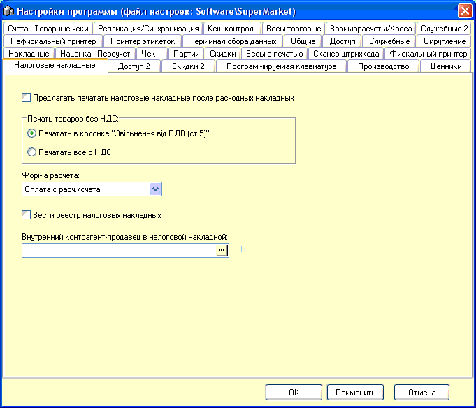

Вкладка "Налоговые
накладные" используется для вывода на печать формы налоговой накладной после
печати расходной накладной.
Значение опций ясно из названия.
Вести реестр налоговых накладных - указывать
признак печаталась или нет налоговая накладная на расходную накладную и потом
по этом признаку можно печатать реестр.